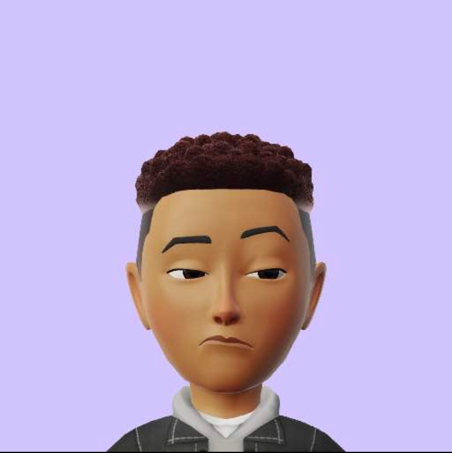

PROFILS
Je suis un développeur passionné et dévoué, toujours à la recherche de nouvelles technologies et de défis à relever.
Avec une solide formation en informatique et une expérience professionnelle en développement web et logiciel, je suis capable de réaliser des projets de manière efficace et de haute qualité.
Mon objectif est de contribuer à la création de solutions innovantes et à la croissance de l'entreprise pour laquelle je travaille.
Je suis également ouvert à l'apprentissage continu et à la collaboration avec d'autres développeurs pour atteindre nos objectifs communs.